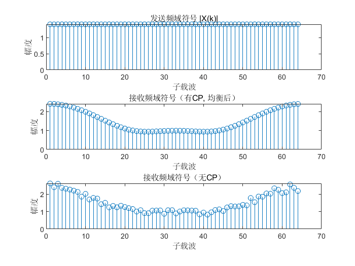
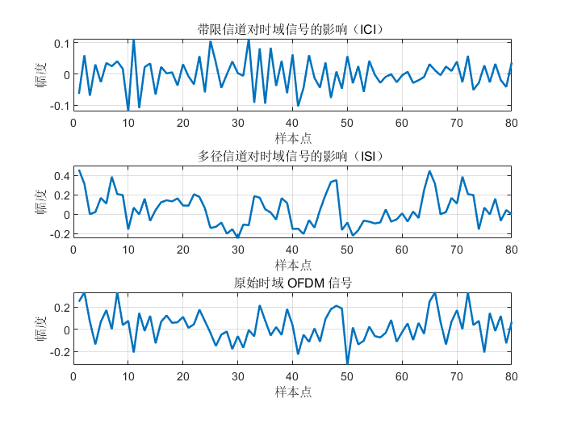

本文介绍了符号间干扰（ISI）和码间干扰（ICI）的产生原因及其在时域上的表现，阐明了循环前缀（CP）通过将符号尾部复制到前端实现等效循环卷积，从而有效抑制ISI的原理。针对ICI，文章指出其主要由子载波正交性破坏引起，循环前缀难以解决，需通过频域均衡、增加子载波间隔和改善同步技术等方法减轻影响。通过MATLAB仿真，文中展示了多径信道和带限信道对OFDM信号产生ISI和ICI的不同时域特征，验证了频域均衡对信号恢复的有效性。
Repo
Github Repo: https://github.com/Yokooou/YoKooou.github.io.git or git@github.com:Yokooou/YoKooou.github.io.git
ISI 与 ICI 产生原因及时域表现及解决方法
1. 符号间干扰（ISI）
（1）产生原因：
ISI 是由于信道的多径传播导致符号间的重叠。具体来说，前一个 OFDM 符号的尾部会延迟进入下一个 OFDM 符号的前部，从而发生干扰。这种干扰通常集中在每个 OFDM 符号的前端，因为延迟的信号首先影响的是后续符号的起始部分。
（2）时域表现：
在时域上，ISI 的影响主要表现为前一个符号尾部的信号与当前符号的前端信号重叠。ISI 是一种局部性的干扰，通常影响信号的前部区域，而符号的后部较为完整。
（3）解决方式：
添加循环前缀（CP）可以有效抑制 ISI，因为循环前缀将符号尾部复制到符号前端，形成保护间隔，防止符号间的重叠干扰。
2. 码间干扰（ICI）
（1）产生原因：
ICI 是由于子载波之间的正交性被破坏导致的干扰，通常发生在有限带宽信道、载波频率偏移或相位噪声较大的情况下。ICI 会导致各个子载波的频谱发生泄漏，从而破坏子载波之间的独立性。
（2）时域表现：
在时域上，ICI 的影响是全局性的，即整个 OFDM 符号都会受到干扰。从时域来看，ICI 会导致信号的整体波形变得混乱，类似于乱码。
（3）解决方式：
ICI 不容易通过循环前缀解决，因为它主要是由频率选择性信道或其他频域上的问题引起的。常见的解决方式包括：
- 使用频域均衡对信号进行补偿（只能补偿，不能根除，效果取决于信道估计 H 的准确性，且如果信道的带宽限制过于严重，某些高频分量可能完全丢失，均衡无法恢复这些频率分量）。
- 增大子载波间隔 Δf，减少子载波间的干扰。
- 使用更好的同步技术减少频率偏移和相位噪声。
3. 循环前缀（CP）能解决 ISI 的原因
物理信道的作用（即多径卷积）本质上是对信号和信道冲击响应 h 做线性卷积，即 ( y = x * h )。但在接收端需要对接收到的信号进行 FFT 变换，这在数学上等价于对信号和信道冲击响应的圆卷积。
所以，将信号的后面一段复制到信号前端，使信号成为一个循环信号，再进行卷积，此时可当作圆卷积。但需注意在卷积时将 h 进行与 x 等长的操作，并且在卷积完后对结果进行截取操作，从头开始，到原信号长度结束（即去尾），还需对结果进行去掉前端与 CP 相同长度的内容操作（即去前端），此时方可在数学上完全相等。
下面以实际信号进行举例：
线性卷积示例（5671234567 和 123），并截取前十位结果
信号 A：5 6 7 1 2 3 4 5 6 7
信号 B：1 2 3
线性卷积的长度为 ( N + M - 1 = 10 + 3 - 1 = 12 )。
计算结果（前十位）：
| y[0] | y[1] | y[2] | y[3] | y[4] | y[5] | y[6] | y[7] | y[8] | y[9] |
|---|---|---|---|---|---|---|---|---|---|
| 5 | 16 | 34 | 33 | 25 | 10 | 16 | 22 | 28 | 34 |
去前端操作后（截去前面部分）：
33, 25, 10, 16, 22, 28, 34
圆卷积示例（1234567 和 123）
信号 A：1 2 3 4 5 6 7（长度 7）
信号 B：1 2 3（长度 3，补 0 到 7 位变成 1 2 3 0 0 0 0）
圆卷积长度为 7：
| y[0] | y[1] | y[2] | y[3] | y[4] | y[5] | y[6] |
|---|---|---|---|---|---|---|
| 33 | 25 | 10 | 16 | 22 | 28 | 34 |
两种卷积结果一致。
4. 使用频域均衡法的可行性原因
-
信号选择性衰落
在无线环境中，信号从发射端到接收端经过多条路径（如直射、反射、绕射、散射等），形成多径信号。不同路径长度和传播时间（时延）不同，导致相同信号的多个副本在接收端“错开”到达。这些副本叠加时，会产生不同频率成分的相位和幅度变化，有的频率分量增强，有的削弱或抵消。 -
均衡核心思想
利用已知的信道频率响应 ( H ) 对接收信号进行频域补偿，从而减轻频率选择性衰落的影响。
5. Matlab 代码示例
1 | clc; clear; |
效果图如下

6. 时域 ICI 和 ISI 的区别示意图

View MY Blog ➾
Please Star this Project if you like it! Follow would also be appreciated! Peace!
如果您喜欢此博客或发现它对您有用，则欢迎对此发表评论。 也欢迎您共享此博客，以便更多人可以参与。 如果博客中使用的图像侵犯了您的版权，请与作者联系以将其删除。 谢谢 ！